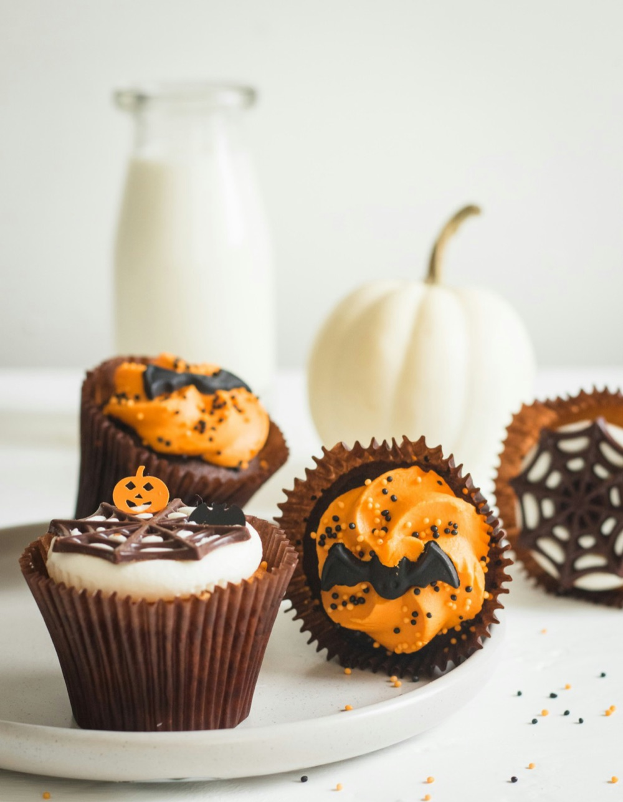

Working With Royal Icing
Royal icing is the backbone of decorated Halloween cookies — jack-o'-lanterns, ghosts, tombstones, spiderwebs. It is made from powdered sugar, water, and either meringue powder or pasteurised egg whites, and its behaviour is controlled almost entirely by how much water you add. Thick "piping" consistency holds a firm line and is used for outlines and detail. Thinner "flood" consistency spreads to fill an outlined area with a smooth surface. A common shorthand is the "15-second rule": drag a knife through the surface of the bowl, and if the line disappears in about 15 seconds, the icing is right for flooding.
Work in stages. Pipe every outline first and let it crust for 10 to 15 minutes, then flood, then let the flooded base dry for several hours (ideally overnight) before adding raised detail on top. Rushing any of these steps is the single most common reason decorated cookies end up with craters, bleeding colours, or dented faces.
Getting a True Purple
Purple is the trickiest of the three Halloween colours because it sits opposite yellow on the colour wheel, and most batters and buttercreams already carry a warm, yellowish cast from butter and egg yolks. Add violet colour to that base and it shifts grey or muddy brown. Two fixes help: start from the whitest base you can — clear vanilla, egg whites only, high-ratio shortening in place of some butter — and reach for a colour that leans blue-violet rather than red-violet, correcting toward blue a drop at a time.
Colour also deepens as it sits, so mix your purple an hour ahead and check it again before deciding it is too pale. In baked goods, remember that heat dulls colour: batters should look a shade darker than your target when they go into the oven.
Marigold and Orange Without a Muddy Middle
Marigold and orange are close cousins, and a cake that uses both can turn into one undifferentiated pumpkin blur. Keep them distinct by giving each a job: marigold for large calm areas (a glaze, a cake base, a dusting of coloured sugar) and a punchier true orange for small high-contrast accents (a piped stem, a candy-corn stripe, a drip). A thin line of dark purple or black between an orange and a marigold element reads as a deliberate border and stops the two warm tones from bleeding into each other visually.
Tempering Chocolate for Shine and Snap
Anything you want to look glossy and break with a clean snap — chocolate bark, moulded bats, dipped spoons, spiderweb decorations — needs tempered chocolate. Tempering is the process of guiding cocoa butter into its stable crystal form by melting the chocolate, cooling it while stirring, then gently rewarming it into a narrow working range (around 31–32°C for dark chocolate, a degree or two lower for milk and white). The quick "seeding" method: melt two thirds of your chocolate, take it off the heat, stir in the remaining third in small pieces until fully melted and the temperature drops into range.
Chocolate that was not tempered will still taste fine, but it stays soft, turns streaky or chalky as it sets, and melts on contact with warm hands — which is why grocery-store "candy melts" exist as a forgiving shortcut when appearance matters more than flavour.
Meringue: Bones, Ghosts, and Bark
Meringue is mostly air held together by egg-white protein and sugar, and it is unbeatable for cheap, dramatic Halloween shapes: piped bones, little ghost kisses, jagged "bone shard" bark. The rules are simple and unforgiving. Start with a spotlessly clean, grease-free bowl — any fat, including a speck of yolk, will stop the whites from whipping. Add the sugar gradually once the whites are foamy, and keep beating until the meringue is stiff, glossy, and no longer feels gritty between your fingers.
Then bake it low — 90 to 100°C — for a long time, and let it cool in the turned-off oven with the door ajar. You are drying it out, not browning it. Humidity is the enemy: meringue made on a rainy day stays tacky, and finished meringues go soft within hours if they are left uncovered in a damp kitchen.

Make-Ahead and Storage
Halloween baking almost always happens for a party, which means the real skill is scheduling. Decorated sugar cookies keep their looks for a week in an airtight tin and actually travel better once the icing is fully cured. Un-iced cookie dough, brownie batter portioned in the pan, and cake layers all freeze well for a month — wrap tightly and thaw in the fridge. Buttercream can be made days ahead and re-whipped. The things that do not wait are anything with fresh whipped cream, anything meringue-topped in a humid room, and cut fruit. Build your menu so the fragile items are the only things you touch on the day.
Start Small
You do not need all of this at once. Pick one bake and one new technique per Halloween — flooded cookies one year, tempered bark the next — and by the time you have a few seasons behind you, the spooky spread comes together without the stress.